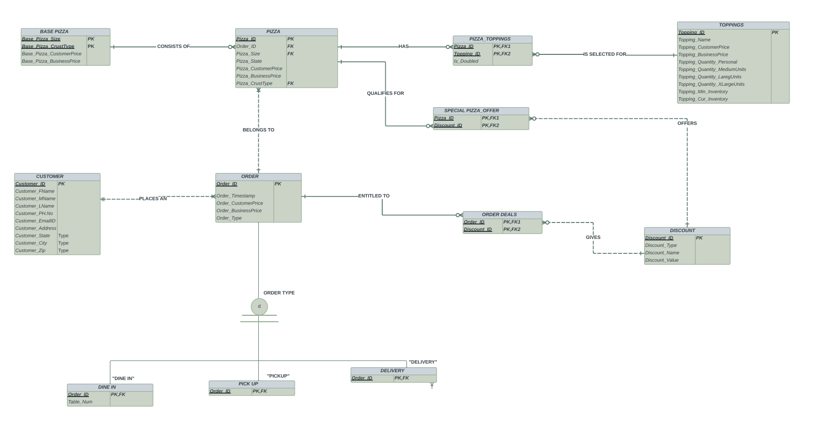
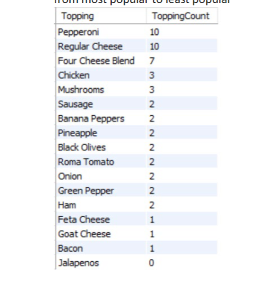
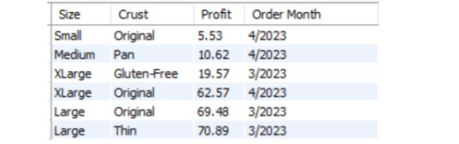
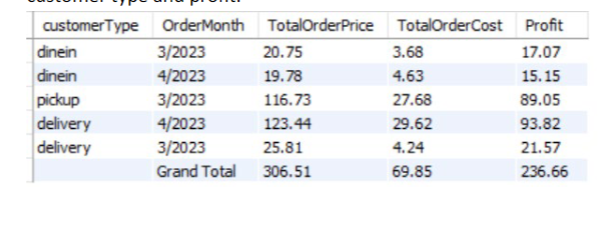

Pizza Store (2023)

Pizza Store
In this project, I designed a database for Pizzas-R-Us, incorporating an Enhanced ER model to manage pizza orders, toppings, customers, and discounts. I created SQL scripts to build and populate the MySQL database, implemented standard views for reporting purposes, and used Java to develop a command-line application for report generation and profitability analysis.
First Part
In the initial part of the project, We designed an Enhanced Entity-Relationship Diagram (ERD) using Crow's Foot notation to represent the Pizzas-R-Us database, capturing key entities like pizzas, orders, toppings, customers, and discounts, along with their relationships and attributes.

Pizza ERD
Second Part
After establishing the Entity-Relational Model, we crafted SQL code to define and display views from the data we have. This SQL implementation allows for a structured data representation, facilitating efficient querying and providing valuable insights through customized perspectives on the underlying data model.
Topping popularity
In the project's second part, I initially created an SQL script to generate three standard views, one of which is the "ToppingPopularity" view. This view ranks all the toppings, considering extra toppings, from most popular to least popular.

Topping Popularity View
Profit by Pizza
As for the second view in the project's second part, I implemented "ProfitByPizza." This view summarizes profits based on pizza size and crust type, sorted in descending order of profitability, over a specified period.

Profit by Pizza View
Profit by Order Type
In the third view of my project, "ProfitByOrderType," I created a summary of profits for each of the three types of orders, organized by month. Additionally, it includes a total of earnings across all charges at the pizzeria, ordered by customer type and profit.

Profit by Order Type View
Third Part
We implemented a Java application for Pizzas-R-Us, allowing users to manage orders, customers, and inventory in their pizzeria database. The application provides features like order creation, customer management, order viewing, marking orders as complete, inventory tracking, and generating profitability reports. It ensures data security using PreparedStatements and adheres to a modular structure within the provided framework, connected to a MySQL database via JDBC.
For a detailed view of the code, check out the GitHub repository:
View the Code on GitHub